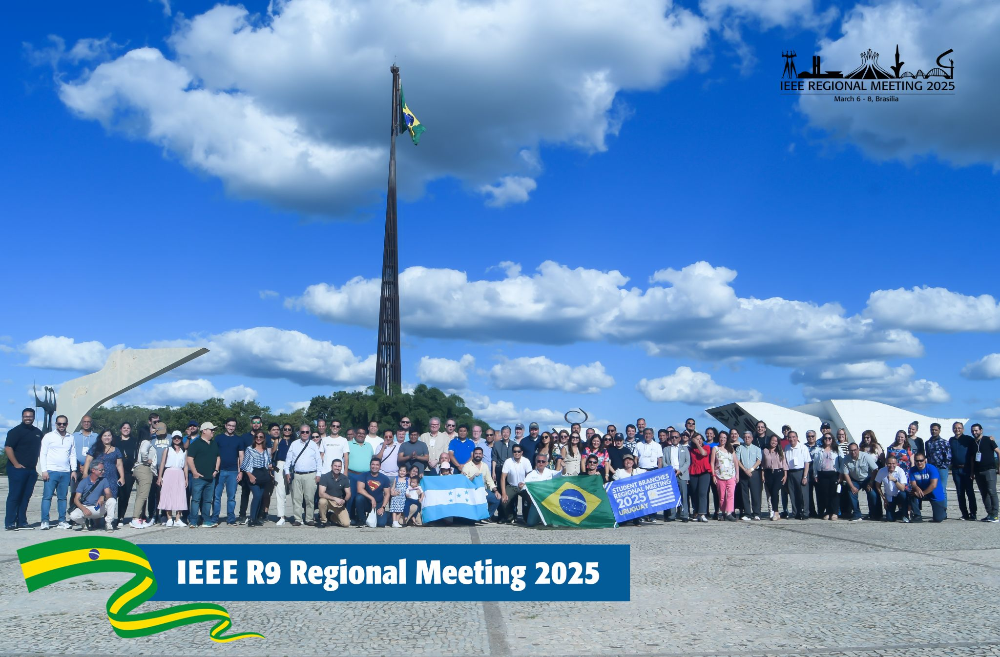
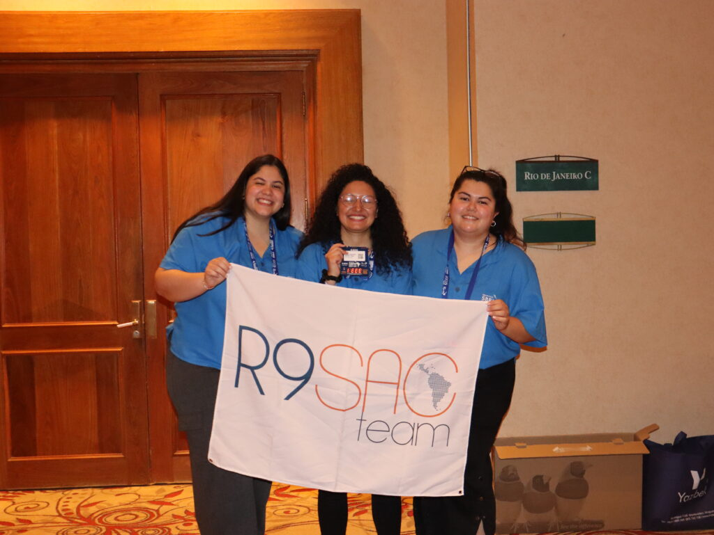
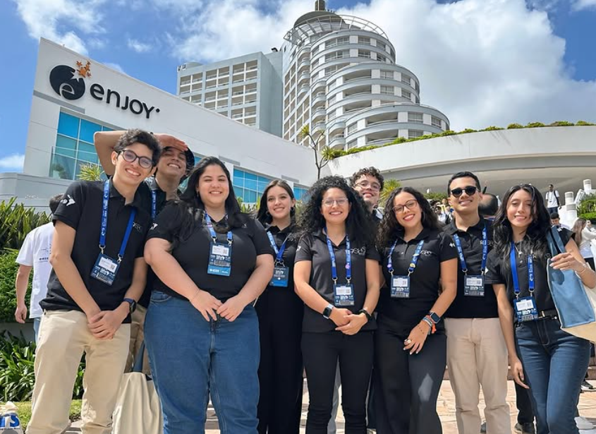
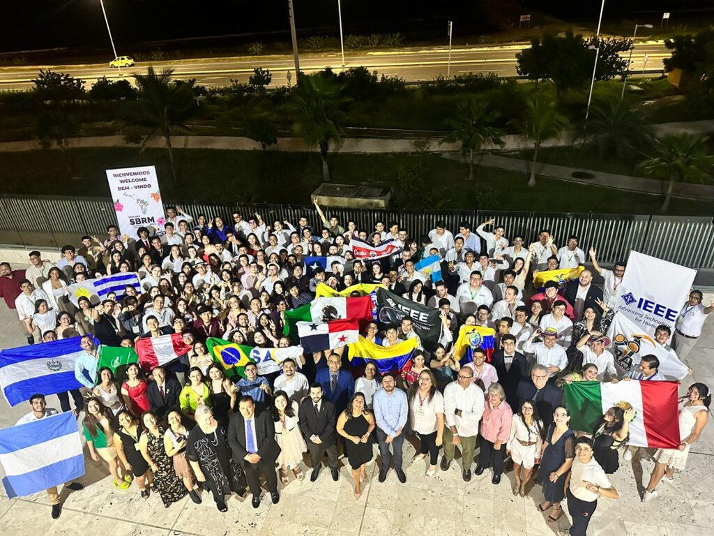
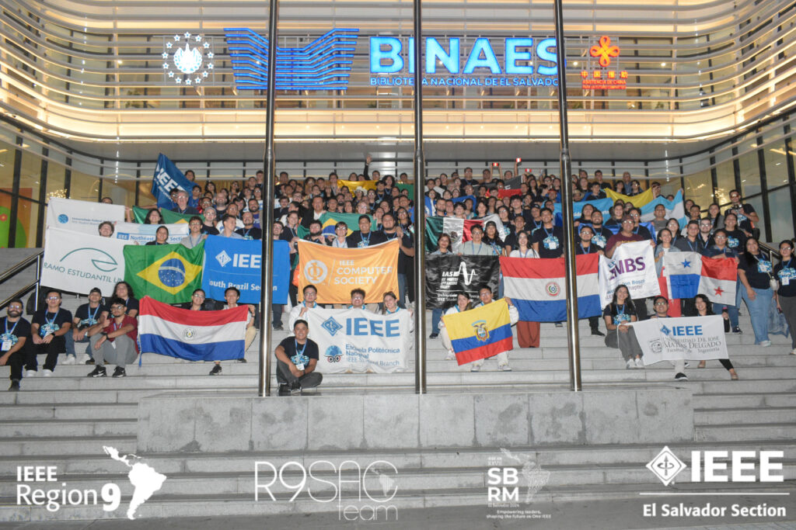
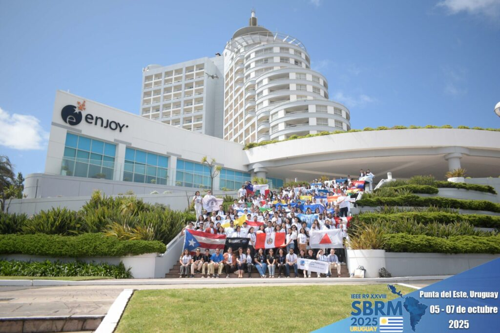

Voluntariado IEEE

MGA SAC Corresponding Member
IEEE MGA — Member and Geographic Activities
Miembro correspondiente del Comité Global de Actividades Estudiantiles de IEEE MGA, apoyando iniciativas de IEEE Educational Activities y Student Activities a nivel mundial.
- Apoyo en iniciativas de IEEE Educational Activities y Student Activities a escala global.
- Participación en reuniones del SAC Global con representantes de todas las regiones IEEE.
- Contribución al desarrollo de políticas y programas para miembros estudiantiles.
Social Media Coordinator
IEEE Entrepreneurship
Coordinación de la estrategia de comunicación y redes sociales de IEEE Entrepreneurship a nivel global, promoviendo el ecosistema emprendedor en la comunidad IEEE.
- Diseño e implementación de la estrategia de contenido en redes sociales de IEEE Entrepreneurship.
- Amplificación de iniciativas globales de emprendimiento tecnológico en la comunidad IEEE.
- Coordinación con equipos internacionales para comunicación unificada y efectiva.






Presidenta del Comité de Actividades Estudiantiles (SAC)
IEEE Región 9 — América Latina y el Caribe
Apoyo y coordinación de actividades para más de 13.000 miembros estudiantes en América Latina y el Caribe. Coordinación del evento anual SBRM y respaldo a la creación y reactivación de unidades organizacionales estudiantiles.
- Establecí conexiones con 15 Sociedades IEEE y aseguré patrocinios por ~USD 120,000 para dos ediciones del SBRM.
- Revisé y aprobé ~200 solicitudes de financiamiento durante dos años.
- Lideré la reactivación de la Revista Estudiantil Regional — Enlaces.
- Creé el Programa SPARK — 2 ediciones, alcanzando 30 de 36 secciones.
Vicepresidenta – Grupo de Afinidad (WIE)
IEEE Colombian Section
Promover el rol de la mujer en ingeniería dentro de la Sección IEEE Colombia mediante eventos, actividades, concursos y visitas técnicas.
- Organicé el primer STEM WIE Colombia Camp 2024.
Vicepresidenta – Sociedad de Robótica y Automatización (RAS)
IEEE Colombian Chapter (RAS)
Apoyo en la organización y coordinación de competencias de robótica, ROS Meetups y proyectos nacionales.
- Impulsé iniciativas IEEE RAS mediante eventos técnicos y actividades prácticas.
Coordinadora de Comunicaciones Electrónicas
IEEE Colombian Section
Coordinación de las comunicaciones electrónicas de la Sección IEEE Colombia, garantizando la entrega oportuna y precisa de información a todos los miembros.
Actividades Estudiantiles — Comité Global MGA
IEEE MGA
Asistencia en la planificación y ejecución de actividades y eventos estudiantiles, colaborando con partes interesadas a nivel mundial.
- Participé en la reunión presencial en Lisboa, Portugal (marzo 2024).
- Contribuí con ideas para mejorar la experiencia del miembro IEEE a nivel global.
Coordinadora de Actividades Estudiantiles de Sección
IEEE Colombian Section
Coordinación de actividades para más de 50 ramas y 800 miembros estudiantes, garantizando participación activa en eventos locales y regionales.
- Facilité la creación y reactivación de Ramas Estudiantiles en universidades de la región.
- Supervisé eventos académicos, competencias y actividades extracurriculares.
Presidenta de Rama Estudiantil
Instituto Tecnológico Superior de Calkiní — IEEE Mexico Section
Liderazgo y coordinación de actividades de la Rama Estudiantil IEEE en ITESCAM durante intercambio académico.
- Participé en la creación de la Rama Estudiantil IEEE en ITESCAM.
- Representé la rama en reuniones con otras ramas y organismos IEEE.
Vicepresidenta – Rama Estudiantil
ETITC — IEEE Colombian Section
Gestión de la interacción entre ramas estudiantiles y diversas unidades organizacionales de IEEE.
Presidenta Grupo de Afinidad – WIE
IEEE ETITC Student Branch — IEEE Colombian Section
Coordinación del grupo de afinidad WIE, promoviendo la inclusión de la mujer en ingeniería mediante eventos, talleres y conferencias.
- Colaboré con otras organizaciones para promover la diversidad y equidad de género en IEEE.